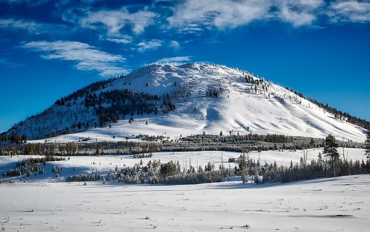

<div class="pages">
	<div data-page="saveddraft" class="page no-tabbar">


		<!-- Search Bar with "searchbar-init" class for auto initialization -->
		<div class=" searchbar">
			<div class="whiteBackground navbar-inner">
				<div class="left">
					<a href="#" class="back link">
						<!-- <i class="icon icon-arrow-left arrowLeft"></i> -->
						<i class="fa fa-angle-left fa-3x tripper-fontcolor" aria-hidden="true"></i>
					</a>
				</div>
				<div class="center tripHeader">Photo trip to Bunson Peak...</div>
				<div class="right link-theme">Edit</div>
			</div>
		</div>
		<!-- 		<div class="searchbar-overlay"></div> -->
		<div class="page-content whiteBackground"> 
			<!-- image tip -->
			
			<div class="overflow">
				<div class="top-image2"></div>
				<div class="top-name">
					<div class="first-name">Roger Saanrinen</div>
					<div class="top-date">Dec 1 - Dec 3, 2016</div>
					<div class="top-tag" style="margin-top: 3vw; margin-bottom: 1vw;">Tagged in Photography</div>
				</div>
			</div>
			<div class="content-block detailP">
				<p>
					Short and sweet! This is a great early morning or late afternoon hike that doesn't take long but delivers a stunning panorama of Gardners Hole, Electric Peak and the Gallatin Range. If you hike Bunsen Peak early in the morning the sun will be in the perfect location for photographing the dramatic eastern edge of the Gallatin Range, Swan Lake Flat and the vast open plain of Gardners Hole.
				</p>
			</div>

			<div class="page-content">
				<div class="dayTabs">
					<div class="dayHeader1">Day 1</div>
					<a href="#" class="tab-link daynavRight" style="color: white;">Next Day <i class="fa fa-angle-right fa-lg fa-fw" aria-hidden="true"></i></a>
				</div>
				<!-- Manual create trip -->
				<div class="page-content">
					<!-- Header icons -->
					<div class="content-block subMargin10">
						<div class="row no-gutter marginTop2vw">
							<div class="col-10"></div>
							<div class="col-90"><div class="detailHeader">Morning <div class="detailDate">(Dec 1, 2016)</div></div></div>
						</div>
						<div class="row no-gutter marginTop2vw">
							<div class="col-10"></div>
							<div class="col-80"><div class="detailHeader" >Yellowstone Geyser: Norris Geyser Basin</div></div>
							<div class="col-10"></div>
						</div>
					</div>
					

					<div class="content-block detailP">
						<p>My trip experience example</p>
					</div>
					<!-- Tips -->
					<div class="content-block inset">
						<div class="content-block-inner tips">
							<div class="row no-gutter">
								<div class="col-10"></div>
								<div class="col-90"><div class="detailHeader">Tips</div></div>
							</div>
							<p>Tips example</p>
						</div>
					</div>
				</div>
			</div>
		</div>
	</div>
</div>
